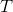
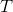
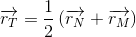
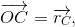
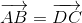
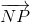
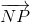
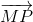
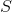
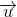

Vectorul de poziţie al punctului care împarte un segment într-un raport dat. Teorema lui Thales
În cadrul acestei secțiuni vom vorbi despre:
- Vectorul de poziţie al punctului care împarte un segment într-un raport dat;
- Teorema lui Thales (condiții de paralelism).
În capitolul anterior, am văzut că dacă  este un triunghi, iar pe latura
este un triunghi, iar pe latura ![[MN]](../../media/webbooks/616/5025/images/equations/nppkc8eyqpylrngemxka7w==.gif) fixăm punctul  astfel încât
fixăm punctul  astfel încât  , atunci are loc relația:
, atunci are loc relația:
 .
.
Avem următoarea reprezentare:
.jpg)
Vom rescrie această relație cu ajutorul vectorilor de poziție astfel:
Ne rezultă că:

O altă relație importantă este condiția de coliniaritate a trei puncte.
Plecând de la relația:
și făcând substituțiile:
;
;
 .
.
Obținem că punctele  ,
,  ,
,  sunt coliniare dacă și numai dacă:
sunt coliniare dacă și numai dacă:
cu  și
și  .
.
În cazul în care  și , atunci se află la mijlocul segmentului , așa cum se poate observa în figura următoare:
și , atunci se află la mijlocul segmentului , așa cum se poate observa în figura următoare:
.jpg)
Atunci vectorul de poziţie al punctului care împarte un segment într-un raport dat va fi:
.
Pentru a vedea cum se aplică acestă relație în exerciții și probleme, profesorii de matematică ai echipei Liceunet te sfătuiesc să citești cu mare atenție următorul exercițiu.
Exercițiu:
Să se arate că un patrulater este paralelogram, dacă și numai dacă diagonalele sale se înjumătățesc.
Soluție:
Avem următoarea figură:
.jpg)
Prima dată vom nota vectorii de poziție astfel:

Dacă este paralelogram, atunci din definiție ne rezultă că și .
Dacă rescriem egalitatea laturilor paralele cu ajutorul vectorilor, avem:
.
Dar
și
.
Atunci, avem:
.
Dacă înmulțim ultima relație cu  , obținem relația:
, obținem relația:
,
care ne arată că diagonalele au același mijloc.
Cu alte cuvinte, am arătat că diagonalele paralelogramului se înjumătățesc.
Din rezolvarea acestei probleme se poate desprinde următorul rezultat important:
Dacă este un paralelogram, atunci avem că:
.
Să ne amintim Teorema lui Thales învățată în clasa a șaptea și să o scriem cu ajutorul vectorilor.
Pentru aceasta, avem următoarea figură:
.jpg)
Dreapta este paralelă cu dreapta , dacă și numai dacă are loc relația:
.
Demonstrație:
În primul rând vom demonstra implicația spre dreapta, adică dacă , atunci .
Cum , ne rezultă că:
,
respectiv
.
Pentru că vectorii  și  sunt coliniari, putem să scriem relația astfel:
și  sunt coliniari, putem să scriem relația astfel:
 .
.
Dar,


și
.
Se face substituția în relația:
și astfel, vom obține:
.
Deoarece vectorii  și  sunt necoliniari, din condiția de necoliniaritate, rezultă că:
sunt necoliniari, din condiția de necoliniaritate, rezultă că:
,
de unde obținem:
.
Deci
,
respectiv
.
Adică
.
Reciproc, arătăm că are loc și implicația spre stânga.
Facem presupunerea că:
și demonstrăm că sau, altfel spus, că vectorii și sunt coliniari.
Din faptul că punctele și  împart segmentele în același raport, obținem:
,
.
Cu ajutorul regulii triunghiului obținem prima relație:
,
iar cu ajutorul regulii patrulaterului obținem a doua relație:
.
Înmulțind această relație cu  , ne rezultă:
, ne rezultă:
.
Adunăm cele două relații și obținem:
.
Deci vectorii și sunt coliniari, de unde obținem că .
Cu ajutorul acestei teoreme putem arăta că dacă într-un triunghi avem rapoarte de segmente proporționale, atunci avem și segmente paralele.
O altă condiție de paralelism a fost deja amintită în capitolul anterior și anume: dacă avem doi vectori  și  , scriși în formă analitică :
, scriși în formă analitică :
 ,
,
respectiv
,
atunci spunem că vectori și sunt coliniari, deci dreptele lor suport sunt paralele, dacă  .
.